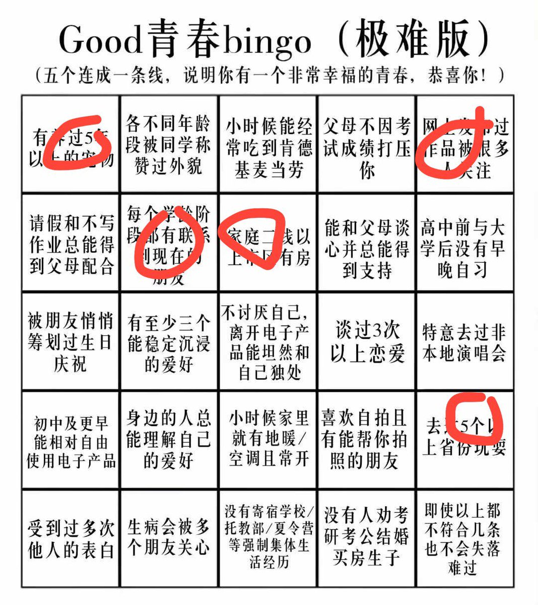
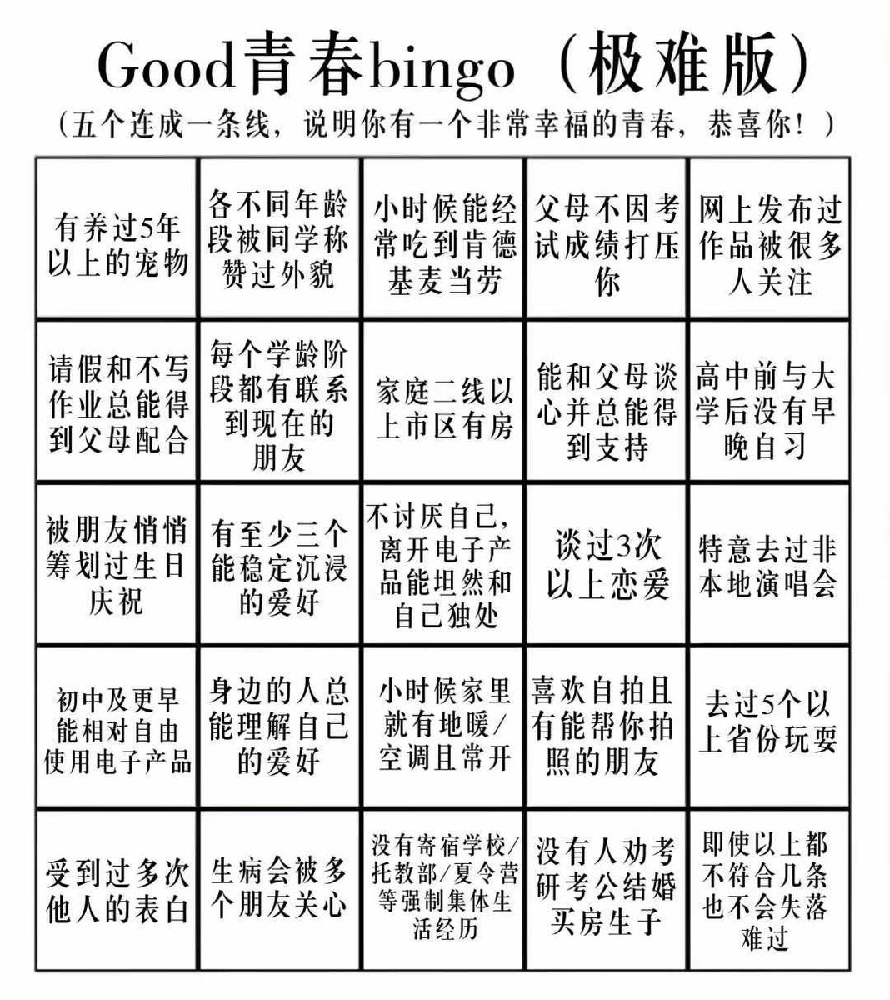

北雁冬翼（simone luxem）🏳️⚧️🏳️🌈🔬
@Simone_Luxem
宠物的话，是一只巴西龟，五岁的生日礼物，当时还只有（当时的自己）拳头大，现在已经是很大的龟了，背甲有饭盒大，希望能活得比我久…
作品的话，我自认自己的sp文和涩图还是有不少人喜欢的（
至于省份，北荷兰省也是省（


北雁十二月(December)
@misaka23668
被毒到血小板低需要⭕️挣钱移植骨髓是很幸福的青春吗…被逼熬大夜准备比赛压出心脏病…很幸福吗？
笑死 https://t.co/y0Ngqnzdvm